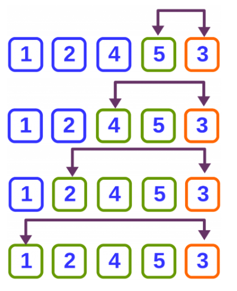
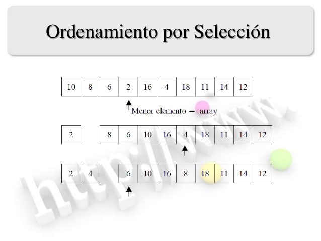

Metodos de ordenamiento
Ordenamiento es la operación de arreglar los registros de una tabla en algún orden secuencial de acuerdo a un criterio de ordenamiento. El ordenamiento se efectúa con base en el valor de algún campo en un registro. El propósito principal de un ordenamiento es el de facilitar las búsquedas de los miembros del conjunto ordenado. El ordenar un grupo de datos significa mover los datos o sus referencias para que queden en una secuencia tal que represente un orden, el cual puede ser numérico, alfabético o incluso alfanumérico, ascendente o descendente. Descripción de los métodos de ordenación: burbuja, selección e inserción. Debido a que las estructuras de datos son utilizadas para almacenar información, para poder recuperar esa información de manera eficiente es deseable que aquella esté ordenada. Existen varios métodos para ordenar las diferentes estructuras de datos básicas. En general los métodos de ordenamiento no son utilizados con frecuencia, en algunos casos sólo una vez. Hay métodos muy simples de implementar que son útiles en los casos en dónde el número de elementos a ordenar no es muy grande (ej., menos de 500 elementos). Por otro lado hay métodos sofisticados, más difíciles de implementar pero que son más eficientes en cuestión de tiempo de ejecución.
Metodo Burbuja
 Segun Navarro (2016) El algoritmo de ordenamiento de burbuja es uno de los algoritmos de ordenamiento más sencillos aunque no es el más eficiente. Su simplicidad lo convierte en un algoritmo ideal para practicar programación. Estabilidad: Estable Método: Intercambio Comparativo: Si Uso de memoria: 1 Complejidad computacional: Mejor caso: on Caso promedio: n2 Peor caso: n2Método Selección
 Algoritmo de ordenamiento por Selección (Selection Sort en inglés): Consiste en encontrar el menor de todos los elementos del arreglo o vector e intercambiarlo con el que está en la primera posición. Luego el segundo mas pequeño, y así sucesivamente hasta ordenarlo todo. Su implementación requiere O(n2) comparaciones e intercambios para ordenar una secuencia de elementos. ventajas: Es fácil su implementación. No requiere memoria adicional. Realiza pocos intercambios. Tiene un rendimiento constante, pues existe poca diferencia entre el peor y el mejor caso. Desventajas: Es lento y poco eficiente cuando se usa en listas grandes o medianas. Realiza numerosas comparaciones. Su funcionamiento es el siguiente:- Buscar el mínimo elemento de la lista.
- Intercambiarlo con el primero.
- Buscar el mínimo en el resto de la lista.
- Intercambiarlo con el segundo.